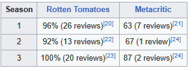

From (stylized as FROM) is an American science fiction horror television series created by John Griffin. The
first season premiered on February 20, 2022, on Epix. The series stars Harold Perrineau, Catalina Sandino
Moreno, Eion Bailey, David Alpay, Elizabeth Saunders, Scott McCord, and Ricky He in main roles.
The series has received acclaim for its story, directing, and the performances of the cast (particularly
Perrineau). In April 2022, the series was renewed for a second season, which premiered on April 23, 2023, on
the rebranded MGM+. In June 2023, the series was renewed for a third season, which premiered on September
22, 2024.
In a nightmarish town somewhere in the United States that traps those who enter, unwilling residents strive to stay alive, plagued by terrifying nocturnal creatures from the surrounding forest, and search for a way out, looking for secrets hidden within the town and beyond. The series centers around Boyd Stevens (Perrineau), the self-appointed Sheriff and de-facto mayor, and the Matthews family, new arrivals to the town who soon discover that they are trapped along with the other existing residents, and must work together to stay alive and find a way to escape.
Main Harold Perrineau as Boyd Stevens, the self-appointed sheriff and de-facto mayor of the Township who is estranged from his son Ellis. He is a retired US Army veteran who served in Afghanistan and Iraq. His wife Abby was killed during their time in the town and buried there. Catalina Sandino Moreno as Tabitha Matthews, Jim's wife and Julie and Ethan's mother, who together are new arrivals to the town. She chooses to live in the Township with her husband and son and is still mourning the recent loss of her youngest child, Thomas. Eion Bailey as Jim Matthews, Tabitha's husband and Julie and Ethan's father, who lives in the Township with his wife and son. He works with Jade to find a way to escape the town and contact the outside world. David Alpay as Jade Herrera, a wealthy software developer who arrives at the town on the same day as the Matthews family. Despite his intelligence, he is initially arrogant and abrasive to the Township residents and struggles with his new circumstances. Elizabeth Saunders as Donna Raines, the leader of the residents at Colony House, who live separate from the Township. Shaun Majumder as Father Rudra Khatri (season 1; guest seasons 2–3), the Township's priest and voice of reason in the community. Following his death, he continues to appear before Boyd as a hallucination. Scott McCord as Victor Kavanaugh, a peculiar Colony House resident who has been trapped in the town since he was a boy. Eli Arsenault portrays Victor as a child. Ricky He as Kenny Liu, Boyd's deputy and right-hand man who lives with his aging parents in the Township. Chloe Van Landschoot as Kristi Miller, the Township's doctor and a former paramedic who was separated from her fiancée when she became trapped in the town. Pegah Ghafoori as Fatima Hassan, Ellis' girlfriend, later his wife, and one of the Colony House residents. Corteon Moore as Ellis Stevens, Boyd's son who lives estranged from his father at Colony House. Hannah Cheramy as Julie Matthews, Jim and Tabitha's teenage daughter and Ethan's older sister who chooses to live at Colony House, where she befriends Ellis and Fatima. Simon Webster as Ethan Matthews, Jim and Tabitha's young son and Julie's younger brother who lives with his parents in the Township. Avery Konrad as Sara Myers, Nathan's sister who works at the Township's diner. She suffers from frequent hallucinations that command her to kill other residents of the Township. Paul Zinno as Nathan Myers (season 1), Sara's brother who lives in the Township and tends to the farm animals. Elizabeth Moy as Tian-Chen Liu (seasons 1–3), Kenny's mother and Bing-Qian's wife who runs the diner in the Township. Deborah Grover as Tillie (season 2–present), an aging carefree woman and one of the bus passengers who arrives at the town. Angela Moore as Bakta (season 2–present), a bus driver who unknowingly brings many new arrivals to the town. Kaelen Ohm as Marielle Sinclair (season 2–present), Kristi's fiancée, a pediatric nurse, and one of the bus passengers who arrives at the town. A.J. Simmons as Randall Kirkland (season 2–present), a volatile, quick-to-anger man and one of the bus passengers who arrives at the town. Nathan D. Simmons as Elgin Williams (season 2–present), one of the bus passengers who had prophetic dreams of the town prior to his arrival. Robert Joy as Henry Kavanaugh (season 3), Victor's father, who lived in the outside world believing that his son was dead. Samantha Brown as Acosta (season 3), a police officer who is brought to the town after picking up Tabitha and Henry in the outside world.
On June 7, 2018, YouTube Red announced the development of the John Griffin–created series as part of an overall deal between production companies Midnight Radio and the Russo brothers' AGBO.[1] By April 2021, the series was transferred to Epix after YouTube Red, now YouTube Premium, moved into unscripted programming. The project received an order of ten episodes, with Jack Bender to direct the first four.[2] In May 2021, Harold Perrineau, Eion Bailey and Catalina Sandino Moreno were cast in lead roles.[3][4][5] In July, Shaun Majumder, Elizabeth Saunders, Avery Konrad, Hannah Cheramy, Ricky He, Simon Webster, Chloe Van Landschoot and Pegah Gahfoori joined the cast.[6] The opening theme song, "Que Sera, Sera (Whatever Will Be, Will Be)" (1956), was performed as a cover by American alt-rock band the Pixies; the music score was composed by Chris Tilton.[7] First season filming began the last week of May 2021 in Halifax, Nova Scotia, Canada, with principal photography around Beaver Bank and Sackville River, in the suburban community of Lower Sackville.[8] On April 24, 2022, Epix ordered a second season, which premiered on April 23, 2023.[9][10] On June 29, 2023, MGM+ ordered a third season, which premiered on September 22, 2024.[11][12][13]
The series premiered in the US on Epix on February 20, 2022.[14][2] In Australia, it is distributed by Stan.[15] In the UK, it is broadcast on Sky Sci-Fi.[16] In Canada, it is available to stream on Paramount+.[17] In India, it is available to stream on Amazon Prime Video.[18] In the Middle East & North Africa, it is available to stream on OSN+.[19]
The series has received acclaim for its story, directing and the performances of the cast (particularly Perrineau). On review aggregator website Rotten Tomatoes, 96% of 26 reviews for the first season are positive. The website's critical consensus reads, "Ably anchored by Harold Perrineau, From is an intriguing journey toward a mysterious destination."[20] Metacritic, which uses a weighted average, assigned a score of 63 out of 100 based on seven critics, indicating "generally favorable reviews".[21]
